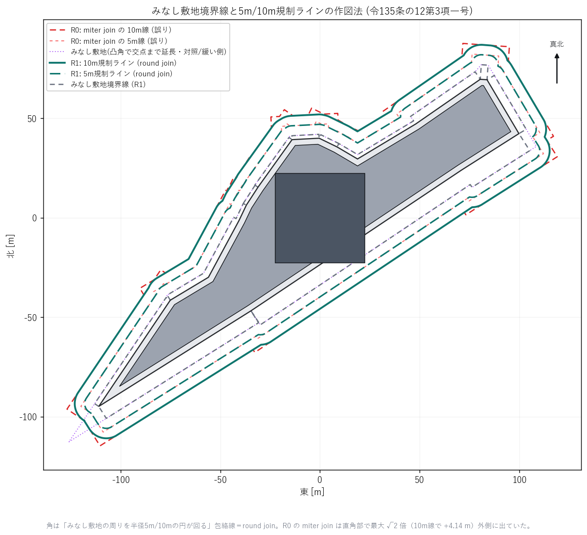
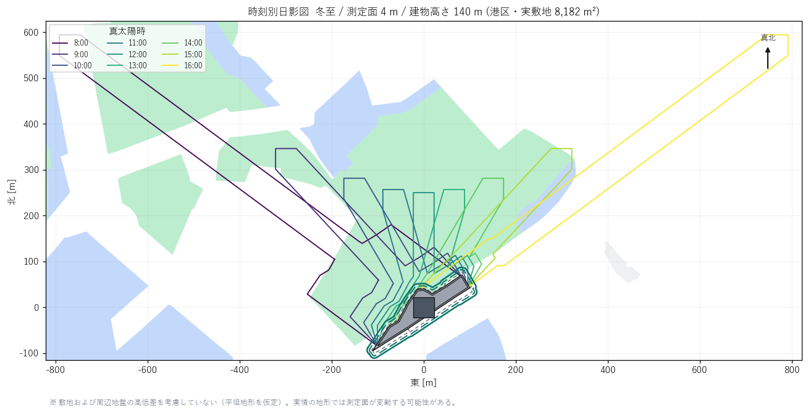
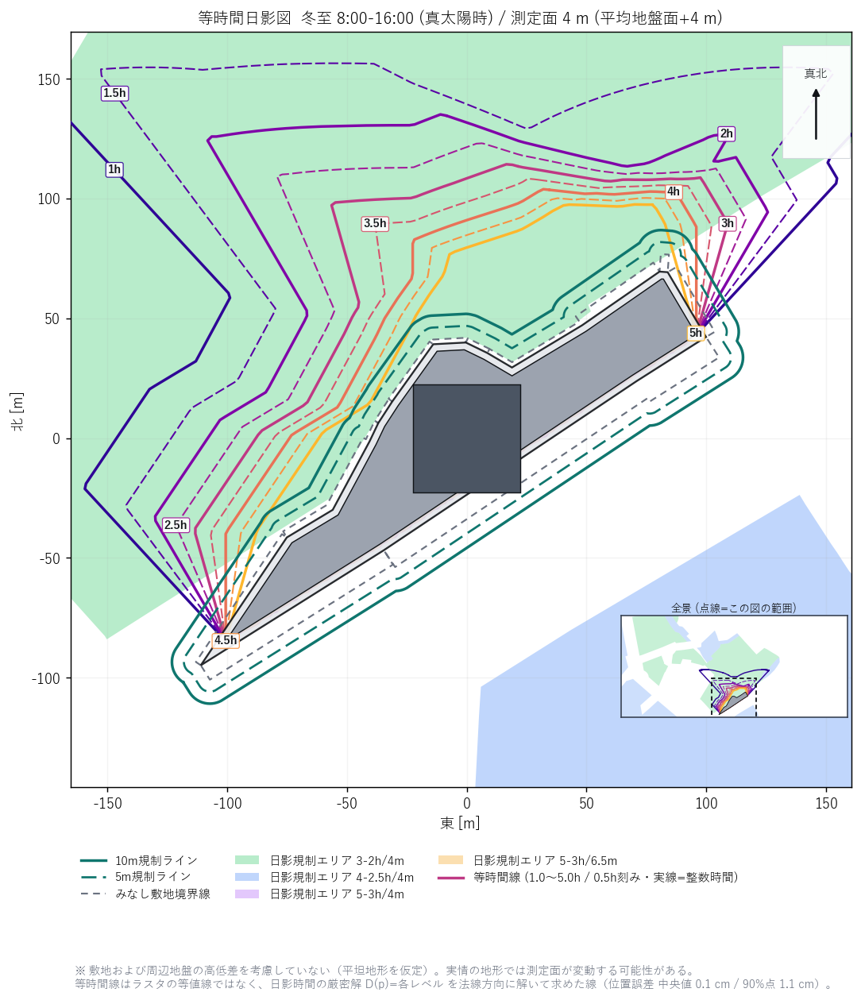
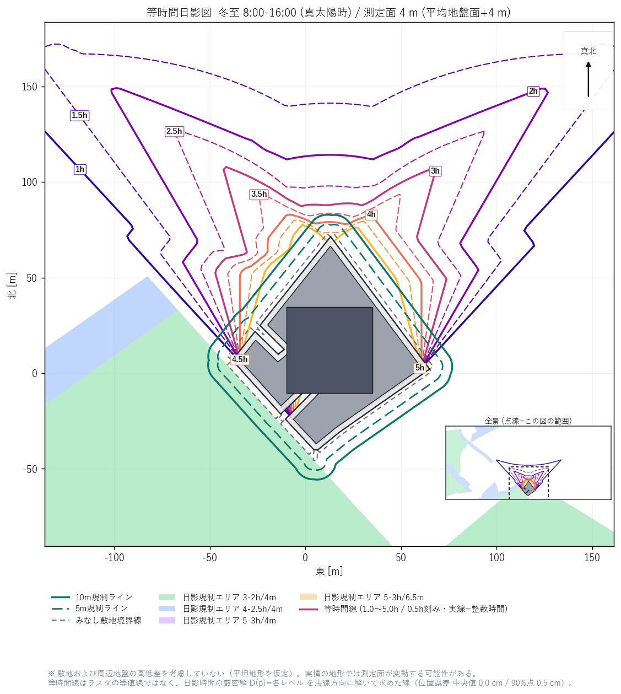
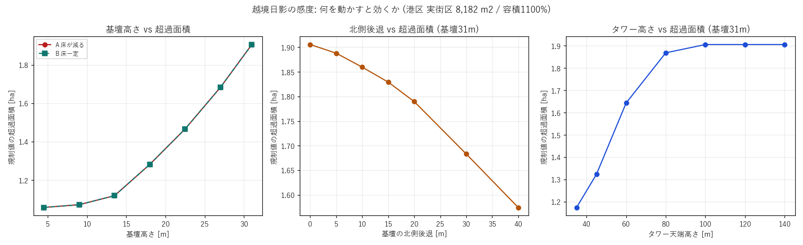
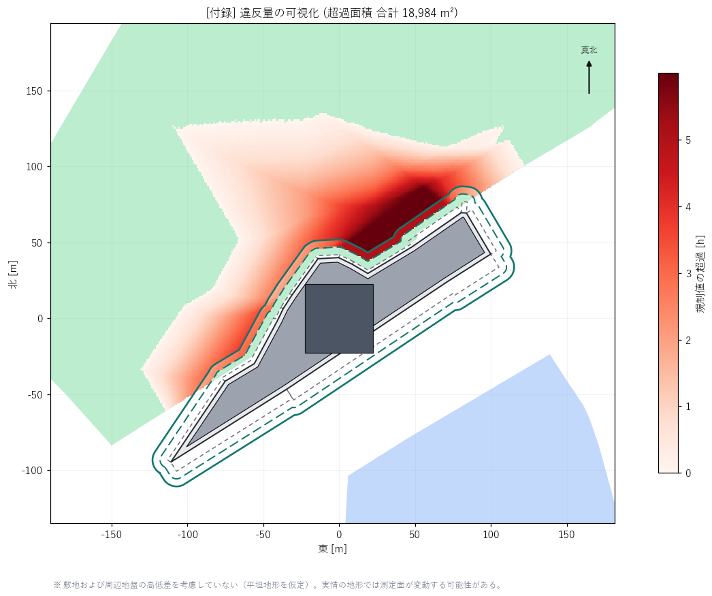

結論（3行）
①
実証できた 「日影チェック」ボタンは、実敷地で通し実行できる
港区の実街区・実規制値 で、区域トレース → みなし敷地境界線の自動生成 → 冬至8〜16時の日影 → 面での判定 → 日影図の出力まで通した。判定は「線の上だけ見る」ではなく法文どおり範囲（面） で行い、規制値は東京都の公開シェープから機械的に読んでいる。捏造値はゼロ。［R1］実務者フィードバックを受けて精度を上げた結果、1敷地あたり約2分（判定＋図に必要な工程で121秒／検証工程込みで196秒） 。等時間線は0.5分刻みの基準解と比べて平均1.2cm・90%点2.1cm の位置精度（3-7）。
②
解決した 規制値は「高度地区レイヤ1枚」で13区の95.8%が埋まる
東京都の公開シェープだけでは 33.1% しか埋まらない（残りは条例「別表第一」＝用途地域 × 容積率 × 高度地区 で引く表）。ツールは高度地区を1件も持っていなかった（実測 0/2,759件）。そこで東京都の高度地区シェープ（4,830ポリゴン・無償）を取得し、別表第一を実装して13区全域に当てたところ 95.8% が自動で確定した 。残る4.2%は「最低限・最高限高度だけの高度地区」の解釈が条例に書かれていない部分。データの壁は無い。工数の話に落ちた。
③
載せない 「守れるボリュームへの自動フィードバック」は成立しない
実証した敷地（容積1100%・延床9.2万m²）で、「通常の日影規制のみ・一様高さという探索族に限った参考上限は高さ8.2m＝容積80%相当」 という逆算結果になった。桁が違う。都心の大規模再開発は通常の日影規制では最初から成立していない のが実態で、実務は計画変更や許可・制度側の対応で通している。ツールが出すべきは「直した案」ではなく「どれだけ超えているか・何が効くか・次に誰に確認する話か」 。
前編からの主な訂正
1. 前編のプロトタイプに東西反転のバグがあった。 太陽方位から影の向きを出す式の符号が逆で、午前の影が東に、午後の影が西に伸びていた （正しくは午前=西、午後=東）。前編のモデルが左右対称の箱だったため数値には出ず、見逃していた。今回カーネルを作り直し、独立検証で発見・是正した。
2. 「終日日影」が 8.08時間になっていた。 5分刻み97サンプルを単純加算すると両端が二重に入る。中点則（両端を半分の重み）に直し、終日日影＝ちょうど8.00時間 になることを確認した。Codexレビューで指摘された「端点の偏り」がまさにこれだった。
3. 前編の速度実測値（等時間日影図0.61秒）は取り下げる。 今回の実装（1m格子・117万セル）では6.40秒 。前編は判定に使えない粗い条件での値だった。それでも1敷地30秒以内なので結論は変わらない。
0. 実務者フィードバックへの対応（R1改訂）
初版を実務者（都市開発）に見てもらい、「どこまで実務の作図ルールに準拠しているか」 という観点で指摘を受けた。参照されたのはADS（日影・天空率計算ソフト）ベンダーによる日影規制ラインの引き方の解説 と、実務の等時間日影図の見本。指摘は全項目を確認・是正し、計算コアの致命バグ1件を新たに発見した 。
指摘項目 結論 実測・根拠 ① みなし敷地境界線W≦10m→中心／W>10m→対岸から5m 準拠 W≦10m→W/2、W>10m→W−5 を9ケースで検算（W=0/3/6/9.99/10/10.01/12/20/55m）。W=10m の前後で連続 （10/2 = 10−5 = 5m）＝場合分けの境界に段差なし。複数道路接道は16辺すべて個別に幅員を実測し辺ごとにオフセット。 ② みなし敷地の角 の閉じ方修正済 ＋要行政確認 記事の手順「緩和となる敷地境界線の端点から垂直線」を辺ごとに適用する方式（階段状）を既定にした。角地で2辺とも緩和される場合に平行線を交点まで延長するか は公的な図解が見つからず、厳しい側（階段状）を既定に。対照計算では交点まで延長するとみなし敷地が +176.7m²（+1.59%） 広がる。 ③ 5m/10mラインの角は丸く回る修正済 初版は join_style=miter（尖り角）。直角部で10m線が √2倍＝14.14m の位置まで外へ出ていた（+4.14m） 。「みなし敷地の周りを半径5m/10mの円が回る」＝round join に是正。40m角の検証形状で、角から45°方向の規制線までの距離が 5.000m / 10.000m になることを確認（折れ線近似誤差 0.38mm / 0.75mm）。 ④ 真北準拠 座標系は原点接する正距円筒（x=(lon−lon0)·111320·cos(lat0)、y=(lat−lat0)·111320）。経線が鉛直線に写るので +Y はどこでも真北＝子午線収差ゼロ （真北2,000m先の点で +Y からのずれ 0.0e+00 度）。平面直角座標9系を使っていたら +3.4分（1km先で1.0m）ずれていた。太陽方位角も真太陽時・真北基準。磁北（東京 約7°西偏）は日影規制と無関係。 ⑤ 測定面4m準拠 ＋修正済 法別表第四(は)欄の原文を確認（一の項1.5m／二・三の項「4m又は6.5m」／四の項ロ4m）。東京都の公開シェープのコード表（HIKAGE2=13 → 3h/2h/測定面4m）と一致 ＝この敷地の4mは正しい。ただし初版は近傍に測定面6.5mの区域があるのに全区域を4.0mで計算していた 。R1は測定面ごとに別々に影・ラスタを作り、区域はその区域の測定面で判定する。 ⑥ 等時間線のスムーズ化修正済 ラスタの等値線をやめ、各頂点を法線方向に動かして日影時間の厳密解 D(p)=各レベル を解く 方式に変更（3-5）。見た目の平滑化ではなく精度向上。0.5分刻みの基準解と比べた実測の線間距離は 平均1.24cm・90%点2.05cm （初版と同じ作り方だと 中央値22.1cm・90%点8.2m）。3,271頂点の99.8%が収束（3-7）。 ⑦ 等時間図を敷地に寄せる修正済 時刻別図＝影の全到達範囲（東西±約790m）、等時間図＝規制ラインと規制区域が読める寄り（約326×315m） に分離。枠外に出る1.0h/1.5h線のために全景インセットを併記。 ⑧ 1.0〜5.0hを0.5h刻みで全表示修正済 9本（1.0/1.5/2.0/2.5/3.0/3.5/4.0/4.5/5.0h）。整数時間を実線、0.5h刻みを破線。規制区域は規制値クラスごとに色分け（実務の等時間日影図の書式）。 ⑨ 違反量の図は実務で不要付録へ降格 初版は「この案件の本命出力」と書いていた。本流から外し付録に移動 （10章）。判定の主役は等時間日影図と判定表。 ⑩ 高低差の注記追加 全図に「敷地および周辺地盤の高低差を考慮していない（平坦地形を仮定）。実情の地形では測定面が変動する可能性がある」を明記。未実装の緩和（令135条の12第3項二号）も8章に明示。
この改訂で新たに見つけた計算コアのバグ
みなし敷地を作る関数の「凸形状ぶんち」が、常に空のポリゴンを返していた。 半平面を作る4頂点を、辺の方向ベクトルではなく法線方向 に取っていたため、4点が一直線に並んで面積ゼロになっていた。凸形状の敷地なら、みなし敷地が消える＝5m/10m線も消える＝判定が壊れる。
初版のE2Eで使った2敷地がたまたま両方とも凹形状で、凹側の分岐（辺ごとの矩形の和）に落ちていたため露見しなかった 。凹側の分岐は結果として今回の既定（端点からの垂直線で閉じる）と同一の形になるので、初版の実証結果のみなし敷地の数値（11,128.6m²）自体は正しい 。凸形状の敷地で回した瞬間に壊れる、という種類のバグだった。単体検証（V1〜V7）を新設して塞いだ。
1. 今回やったこと（前編との差分）
前編は「できるか」の見積もりだった。今回はトライアルに載せる前提で、実物を動かして確かめた 。site-trace-mvp のコードには一切触れていない（別作業と並走のため読み取り専用で扱った）。作ったものは全部スタンドアロンのプロトタイプ。
L0：計算コアを作り直し、独立検証をつけた
前編のプロトは検算が無かった。今回は解析解・独立実装との突き合わせを自動テスト化（全項目PASS ）。バグを2件発見。
E2E：実敷地1件を通しで回した
港区の実街区（8,181.6 m²・商業地域）で、実規制値・実道路データ を使い、判定と日影図出力まで。
カバレッジ：都心13区で規制値がどこまで自動で埋まるか実測した
用途地域レイヤ2,759件 × 日影規制シェープ601件の面積交差を全件計算。足りない分を埋めるため、東京都日影条例の別表第一（47通り）を実装し、東京都の高度地区シェープ4,830ポリゴンを取得して13区全域に当てた。
スイープ：パラメータを振って「効く変数」を実測した
基壇高さ／北側後退／タワー高さ／床一定条件、および逆算（二分探索）。1案1.8秒 。
条文：判定フローに落とすため、根拠を原文で再確認した
法56条の2（第1項ただし書・第4項・第5項）、令135条の12、令135条の13、法59条4項、法60条の2第5項・第6項を e-Gov 法令API の原文で確認。加えて東京都日影条例の本文（第2条・第3条・別表第一〜五）を東京都例規集で取得 。前編の制度別マトリクスに訂正が1件出た（後述4-2） 。
2. L0：計算コアの答え合わせ
前編の反省は「速さは測ったが、正しさを測っていない」だった。Codexレビューでも「厳密解と呼ぶな」「区域全体で見ろ」と指摘された。今回はそこから直した。
2-1. 何を検証したか
建物は Phase3 と同じ「2D環（平面ポリゴン）＋高さ」の階段状プリズム 。その影は、ポリゴンと線分のミンコフスキー和 （2つの図形を足し合わせた図形）で求まる。これが本当に正しいかを、3通りで確かめた。
■ L0 検証結果（全項目 PASS）
=== 1) 太陽位置 ===
[PASS] 南中高度 = 90-lat-23.45 h=30.8700 期待=30.8700
[PASS] 南中方位 = 0 A=0.000000
[PASS] 8時と16時が対称 8時 h=8.076 A=-53.365 / 16時 h=8.076 A=+53.365
=== 2) 影の向き ===
[PASS] 午前(8時)の影は西へ伸びる (dx,dy)=(-565.5,420.5)
[PASS] 南中の影は真北へ (dx,dy)=( 0.0,167.3)
[PASS] 午後(16時)の影は東へ伸びる (dx,dy)=(+565.5,420.5)
=== 3) ミンコフスキー和 vs 密サンプルunion（独立実装）===
凸(矩形) 密サンプル ⊂ 厳密解 はみ出し 0.00e+00 m2
相対差 n=500:2.53e-03 -> n=8000:1.58e-04（16倍で16.0倍改善＝1/n収束）
凹(L形) 密サンプル ⊂ 厳密解 はみ出し 0.00e+00 m2
相対差 n=500:1.74e-03 -> n=8000:1.09e-04（16.0倍）
穴あき(ドーナツ) 密サンプル ⊂ 厳密解 はみ出し 0.00e+00 m2
相対差 n=500:9.66e-04 -> n=8000:6.03e-05（16.0倍）
浮遊(z 30-60m) 密サンプル ⊂ 厳密解 はみ出し 0.00e+00 m2
相対差 n=500:8.48e-04 -> n=8000:5.30e-05（16.0倍）
=== 4) 解析解との比較（南中・箱 50x40m・H=100m・測定面4m）===
[PASS] 影面積 = WD + W*L 計算 10,029.75 m2 / 解析 10,029.75 m2（相対誤差 <1e-9）
=== 5) 測定面より低いプリズム ===
[PASS] z_top < z_plane -> 影なし
[PASS] 下端が測定面でクリップされる（浮いたボリュームの誤判定なし）
読み方
3) がいちばん重要。 「建物を細かく刻んで平行移動したものを全部足す」という素朴で確実な独立実装と比べた。素朴版は刻みの隙間ぶん必ず小さくなる はずで、実際に はみ出しゼロ（＝素朴版は厳密解の部分集合） 、かつ刻みを16倍細かくすると差が16分の1になる（1/n収束） 。これは厳密解が正しい極限であることの証拠になる。凹形・穴あき・浮いたボリュームでも同じ。
ただし「厳密」なのは限定つき。 入力された階段状プリズムに対する幾何学的な厳密解 であって、①時間の積分は離散化している②実建物の斜面を階段近似している場合はその近似誤差が残る③浮動小数点の精度は別問題。前編の「厳密」という言い方はこの限定を付けて使う。
2-2. 見つけたバグ2件（前編プロトの誤り）
① 東西反転
太陽方位 A（南=0・西が正）から影の方向を出す式が (-sinA, +cosA) になっていた。正しくは (+sinA, +cosA)。午前と午後が入れ替わっていた。
前編のモデルが左右対称の箱だったため、数値（最大日影時間・影長）はすべて正しく出ていた。実敷地のような非対称形状で初めて効く種類のバグ。対称形だけでテストすると通ってしまう という教訓。
② 端点の二重計上
8:00〜16:00 を5分刻み97サンプルで単純加算すると、終日日影の点が 97×5分＝8.083時間 になる。両端を半分の重みにする（中点則）で 8.000時間 に是正。
是正の効果は実測で出た。ラスタ値と厳密値（1分刻み＋二分法で秒まで詰めた値）の差が最大4.9分 → 最大2.4分 に半減。
3. E2E実証：実敷地を通しで回す
3-1. 使ったデータ（すべて実データ）
敷地
site-trace-mvp data/blocks.geojson の実街区 id=133（国土地理院データ由来の街区ポリゴン）。港区・北緯35.665171 / 東経139.735218・8,181.6 m²・16頂点 。
なぜ築地・豊島でないか：ツールの街区／周辺建物データは現時点で港区中心部（緯度35.65-35.69・経度139.735-139.775）しか生成されていない（13区展開は用途地域など規制レイヤのみ）。実データで通すことを優先し、港区の実街区を使った 。
用途地域
site-trace-mvp data/youto.geojson（国土数値情報 A29）→ 商業地域 ＝日影規制の対象区域になり得ない地域。越境日影のケース
規制値
東京都都市整備局「日影規制」シェープ（東京都オープンデータカタログ・CC BY 4.0）。敷地から1.5km以内に43ポリゴン 。最寄りは敷地から1.6m の 別表第三 コード13 ＝ 3時間／2時間・測定面4m 。
道路
site-trace-mvp data/roadedges.geojson（道路縁）263本。幅員は静的属性が存在しないため、index.html の analyzeEdges と同じレイキャスト方式 （辺の外向き法線に沿って5点サンプル→中央値）で実測した。
3-2. みなし敷地境界線の自動生成（令135条の12第3項一号）
日影規制の5m線・10m線は、実際の敷地境界線ではなく「みなし境界線」から測る 。条文（原文確認済み）はこう定めている。
令135条の12第3項一号（原文）
建築物の敷地が道路、水面、線路敷その他これらに類するものに接する場合においては、当該道路、水面、線路敷その他これらに類するものに接する敷地境界線は、当該道路、水面、線路敷その他これらに類するものの幅の二分の一だけ外側 にあるものとみなす。ただし、当該道路、水面、線路敷その他これらに類するものの幅が十メートルを超えるとき は、当該道路、水面、線路敷その他これらに類するものの反対側の境界線から当該敷地の側に水平距離五メートルの線 を敷地境界線とみなす。
つまり 幅員W≦10m なら W/2 だけ外へ、W>10m なら (W−5) だけ外へ 。これを16辺すべてに機械適用した結果が下記。道路幅員さえ測れれば完全に自動化できる ことが確認できた。
■ 辺ごとの実測幅員 → みなし境界線のオフセット量
辺 0 長さ 29.4m 幅員 3.8 m -> 外側へ 1.9 m 辺 8 長さ 34.4m 幅員 15.1 m -> 外側へ 10.1 m
辺 1 長さ 10.7m 幅員 3.5 m -> 外側へ 1.8 m 辺 9 長さ 31.4m 幅員 8.5 m -> 外側へ 4.2 m
辺 2 長さ 8.5m 幅員 3.5 m -> 外側へ 1.8 m 辺10 長さ 3.4m 幅員 12.3 m -> 外側へ 7.3 m
辺 3 長さ 32.5m 幅員 6.2 m -> 外側へ 3.1 m 辺11 長さ 39.4m 幅員 9.2 m -> 外側へ 4.6 m
辺 4 長さ 22.4m 幅員 6.0 m -> 外側へ 3.0 m 辺12 長さ 34.1m 幅員 3.8 m -> 外側へ 1.9 m
辺 5 長さ 64.3m 幅員 5.0 m -> 外側へ 2.5 m 辺13 長さ 12.0m 幅員 3.8 m -> 外側へ 1.9 m
辺 6 長さ 90.3m 幅員 12.1 m -> 外側へ 7.1 m 辺14 長さ 10.0m 幅員 3.9 m -> 外側へ 1.9 m
辺 7 長さ 127.0m 幅員 13.5 m -> 外側へ 8.5 m 辺15 長さ 13.6m 幅員 3.9 m -> 外側へ 2.0 m
実敷地 8,181.6 m2 -> みなし敷地 11,128.6 m2（+36%）
ここは効く
みなし境界線を入れると規制線が敷地から最大10m外へ動く 。5m線・10m線はさらにその外なので、敷地境界から最大20m外まで規制の起点がずれる 。これを無視すると判定が厳しすぎる側に大きく外れる。Phase3 は既に辺ごとの幅員を持っている ので、この緩和は追加データなしで実装できる。
［R1］角の閉じ方と、5m/10mラインの丸み
条文が動かすのは「辺」＝敷地境界線 であって、面ではない。したがって辺と辺の間（角）をどう閉じるかは条文に書かれていない 。ここが実務の作図ルールの領域になる。
片側だけ緩和される角（道路 × 隣地）
実務解説の手順は「平行線を引く」→「緩和となる敷地境界線の端点から垂直線 」。つまり平行線は元の敷地境界線の端点で垂直に打ち切られ、そこから先は元の隣地境界線に戻る＝段差が残る 。R1はこれを実装した。
両側とも緩和される角（角地）要行政確認
2本の平行線を交点まで延長して角を尖らせる のか、上と同じく各辺で垂直に打ち切って階段状にする のかを明示した公的図解は見つけられなかった（JCBA「基準総則・集団規定の適用事例」は有償のため未確認。特定行政庁の公開解説は緩和"率"の表止まり）。R1は厳しい側＝階段状を既定にした 。両方計算して差を出せるようにしてある。
5m線・10m線の角
条文が定めるのは「みなし敷地境界線からの水平距離が5m／10mの範囲」。距離で定義されている以上、角は必ず円弧になる （実務の説明では「みなし敷地の周りを円がくるくる回るイメージ」）。初版は尖り角（miter）で作っていたため、直角部で10m線が本来の位置より 4.14m 外側にあった 。
■ 角の処理を変えると数字がどう動くか（この敷地・16辺すべて接道）
みなし敷地 端点から垂直線で閉じる（R1既定） 11,128.6 m2
凸角で交点まで延長（対照） 11,305.3 m2 (+176.7 / +1.59%)
※ 交点まで延長する方式は、辺どうしが準平行だと交点が遠方へ飛ぶ。
この敷地でも1箇所で 48.4m の突出が出てフォールバックが要った
＝法定の作図法として使うには追加の取り決めが要る。
5m超10m以内 R1 (round join) 3,217 m2
R0 (miter join) 3,398 m2 (+181 m2 / +5.6%)
10m以内の面積 R0 は +253 m2 過大 (角が外へ跳ね出す分)

図1：みなし敷地境界線と規制ラインの作図法。 濃緑＝R1の10m線／5m線（round join）、赤の破線＝初版のmiter joinの規制線 。角のたびに赤が外へ跳ね出しているのが誤差そのもの。紫の点線＝角地で交点まで延長した場合のみなし敷地（左下で大きく飛び出しているのが準平行辺の問題）。※ 敷地および周辺地盤の高低差を考慮していない（平坦地形を仮定）。
3-3. ボリューム（Phase3 と同じ形式）
基壇 : 敷地から3m後退 6,553 m2 × 6層（高さ 31.0 m）
タワー : 45×45m = 2,025 m2 × 26層（天端 140.2 m）
延床 : 91,965 m2 ／ 目標（容積1100% = 特区想定）89,997 m2
建物高さ 140.2 m -> 高さ10m超 = 法56条の2第4項（越境日影）の対象
配棟そのものは Phase3 の出力形式（2D環＋高さの階段状プリズム）に合わせて組んだ代替案 。この街区の Phase3 実ジョブが存在しないため。敷地形状・用途地域・規制値・道路はすべて実データ で、代替なのは massing の作り方だけ。
3-4. 判定：法文どおり「面」で見る
前編では「5m線・10m線の線上 だけ評価すれば足りる」と書いたが、Codexレビューで誤りを指摘され撤回した。条文が制限しているのは「5mを超える範囲」という面 である。さらに今回、条文で区域ごとに別々に判定すべき ことも確認できた。
令135条の13（原文・要点）
対象建築物が日影時間の制限の異なる区域の内外にわたる場合には当該対象建築物がある各区域内に、対象建築物が、冬至日において、対象区域のうち当該対象建築物がある区域外の土地に日影を生じさせる場合には当該対象建築物が日影を生じさせる各区域内に、それぞれ当該対象建築物があるものとして 、同項の規定を適用する。
＝ 影が3つの区域にまたがるなら、3区域それぞれの規制値で3回判定する 。今回の実装はこの通りに、規制ポリゴンごとに「5m超10m以内」「10m超」の2範囲を切って判定している。
■ 判定結果（法56条の2第4項：対象区域外の高さ10m超建築物 → 越境日影）
[別表第三 code=13 3.0h/2.0h 測定面4.0m] 敷地から 2 m
5m超10m以内 規制 3.0h 実測最大 8.00h 超過面積 1,344 m2 -> 超過
10m超 規制 2.0h 実測最大 8.00h 超過面積 17,729 m2 -> 超過
［R1］規制線を round join に直した結果 -> 1,235 m2 / 17,749 m2
総超過面積 18,984 m2（平面で1回だけ数えた値。範囲 18,582〜19,388 m2）
[別表第三 code=13 3.0h/2.0h 測定面4.0m] 敷地から 514 m
10m超 規制 2.0h 実測最大 0.46h 超過面積 0 m2 -> 適合
[別表第三 code=14 4.0h/2.5h 測定面4.0m] 敷地から 70 m
10m超 規制 2.5h 実測最大 0.00h 超過面積 0 m2 -> 適合
[別表第三 code=14 4.0h/2.5h 測定面4.0m] 敷地から 160 m
10m超 規制 2.5h 実測最大 1.21h 超過面積 0 m2 -> 適合
（ほか 別表第三 6区域・すべて適合。合計43ポリゴンを評価）
総超過面積 19,073 m2
■ 二次検証：ラスタの最悪点を 1分刻み＋二分法（秒まで）で再計算
5m超10m以内 最悪点 ( 17.5, 38.5) ラスタ 8.00h -> 厳密 8.00h 差 0.0分 -> 超過
10m超 最悪点 ( 18.5, 44.5) ラスタ 8.00h -> 厳密 8.00h 差 0.0分 -> 超過
10m超 最悪点 (-504.5,403.5) ラスタ 0.46h -> 厳密 0.42h 差 2.4分 -> 適合
（11点／13.8秒。ラスタと厳密の差は最大2.4分＝判定margin内）
［R1］判定そのものも厳密解ベースにした
初版は判定の数値がラスタそのもの で、秒精度の計算は「二次検証」として後から当てるだけだった。第三者レビュー（Codex）に「等時間線だけ高精度化しても、適否判定の精度は上がっていない」と指摘され、判定経路を作り直した。
① 最大日影時間は厳密解。 ラスタで上位セルの当たりを付け、そこを秒精度の評価関数で測り直した値を判定に使う。② 判定幅に空間側の誤差を入れた。 時間離散化（サンプル間隔）＋空間離散化（格子寸法×最悪点の局所勾配）を足した幅で「適合／要精査／超過」を切る。③ 超過面積は範囲で持つ。 しきい値を±サンプル間隔動かした値を併記する（例：10m超の超過 17,749m² ＝ 17,347〜18,153m²）。
④ 超過面積の合計は平面で1回だけ数える。 規制区域ポリゴンは重なることがあり、区域ごとの超過面積を単純加算すると二重計上になる。初版の「総超過面積 19,073m²」は区域別の単純合計だった。
3-5. 出力した図［R1で全面差し替え］
初版の図は等時間線がガビガビ で、実務の等時間日影図とは別物だった。原因は「日影時間のラスタ（1m格子・5分刻み）の等値線をそのまま引いていた」こと。R1では線の精度をラスタ解像度から切り離した 。
等時間線をどう作り直したか
① 任意の点の日影時間を秒精度で出せるようにした。 時刻サンプルごとの内外に加えて、影の境界までの符号付き距離 を線形内挿して出入りの時刻を求める。中点則のような離散化の偏りを持たない。端点の状態が同じでも「入って出た」可能性がある区間（境界の移動量に対して余裕が小さい区間）は再帰的に二分して取りこぼしを潰す。
② 等時間線は「等値線」ではなく「方程式の解」にした。 粗いラスタから marching squares で線の位相だけを取り、各頂点を線の法線方向に動かして D(p)=各レベル を割線法で解く 。線は本来の位置へ動くだけで、見た目のための平滑化（スプライン等）は一切かけていない。滑らかになったのは、精度が上がった結果 。
③ 落とし穴が1つあった。 積算ラスタの値はサンプル間隔の整数倍しか取らない（2分刻みなら1時間＝30ステップ）ので、1.0/1.5/…/5.0h はどれも「実際に出現する値」と完全に一致する 。marching squares は平坦域で退化し、セル境界に沿ったギザギザの偽の線を出す。抽出レベルを0.36秒だけずらして回避した。初版のギザギザの一部はこれが原因。

図2：時刻別日影図。 冬至の真太陽時8時〜16時、1時間ごとの影の輪郭。灰色＝敷地、濃灰＝タワー、色分け＝日影規制区域（規制値クラス別）、濃緑の実線／破線＝みなし境界線からの10m線／5m線。8時と16時の影が長く伸びるため、計算域は東西±約790m・南北−85〜+594m に広がる。Phase3ビューアの現在の描画範囲（数百m）を超える。※ 敷地および周辺地盤の高低差を考慮していない（平坦地形を仮定）。実情の地形では測定面が変動する可能性がある。

図3：等時間日影図（R1）。 時刻別図とはズームを変え、規制ラインと規制がかかる区域が読める寄り（約326×315m） にした。等時間線は1.0〜5.0時間を0.5時間刻みで9本（実線＝整数時間、破線＝0.5h刻み）。規制区域は規制値クラスごとに色分け（凡例の「3-2h/4m」＝5m超10m以内3時間／10m超2時間／測定面4m）。右下は全景インセットで、枠外へ伸びる1.0h・1.5h線の到達範囲を示す。緑の区域（3h/2h）の中に2h線が深く入り込んでいるのが超過 。※ 敷地および周辺地盤の高低差を考慮していない（平坦地形を仮定）。実情の地形では測定面が変動する可能性がある。
3-6. 同じエンジンで「適合」も出る（対照実験）
超過ばかり出るツールは信用されない。同じエンジンをツールの実ジョブ（20260710_105950・港区・5,605.8m²・商業地域） の敷地に当てると、全区域で適合になる。

図4：適合ケース（R1で作り直し）。 同じ港区でも、規制区域が敷地の西側 にあるため、北へ伸びる影が規制区域に長く滞在しない。最大 0.73 時間（規制 2.0／2.5時間）で全区域適合・超過面積ゼロ 。方位関係だけで結論が反転する ことがよく分かる例。※ 敷地および周辺地盤の高低差を考慮していない（平坦地形を仮定）。実情の地形では測定面が変動する可能性がある。
3-7. 実測した処理時間
［R1］精度と時間の実測
まず等時間線がどれだけ本来の位置に乗っているか 。指標は2つ用意した。①局所推定 （各頂点の残差÷その点の勾配）と、②実測 （サンプル間隔を4倍細かい0.5分にした基準解で同じ線を解き直し、線と線の双方向最近傍距離を測る）。第三者レビューで「①は局所推定であって実測誤差ではない」と指摘されたので②を追加した 。
■ 等時間線の位置誤差（港区・8,182m² / 測定面4m / 全9本・3,271頂点）
② 基準解(0.5分刻み)との線間距離 ＝ 実測
1.0h 平均 2.18 cm 90%点 4.73 cm 最大 97.7 cm
2.0h 平均 0.48 cm 90%点 0.82 cm 最大 38.7 cm
3.0h 平均 0.13 cm 90%点 0.15 cm 最大 15.3 cm
5.0h 平均 0.04 cm 90%点 0.02 cm 最大 6.7 cm
全体 平均 1.24 cm 90%点 2.05 cm 最大 97.7 cm
① 局所推定（残差÷勾配） 中央値 0.07 cm / 90%点 1.11 cm
比較：初版と同じ作り方（1m格子・5分刻み・ラスタの等値線）を同じ物差しで測ると
中央値 22.1 cm / 90%点 8.2 m / 最大 190 m
-> 1時間線の遠方は、初版だと最大190mずれていた（線が寝ていて誤差が拡大する）
収束状況 3,271頂点中 99.8%が収束。収束せず前後から補間したのは 4点(0.12%)。
うち947頂点は建物外周などの「不連続部」＝そこは線でなく段差
（全レベルの線が重なる。位置誤差の対象外として別カウント）
1時間線だけ誤差が一桁大きいのは、線が寝ているから。 遠方では日影時間の勾配が 0.007 h/m しかなく、1秒の時間誤差が数cmの位置誤差になる （3時間線では 0.14 h/m ＝ 20倍効きにくい）。判定に効く2〜5時間の線は平均0.5cm以下。
もう一つ、第三者レビューで指摘された「サンプル間隔の間に入って出るケースの取りこぼし」 も実測した。影の移動量に対して余裕が小さい区間を再帰的に二分する処理を入れて、等時間線上の117点で細分あり／なしを比較したところ、差は 0.000 秒・変化した点はゼロ （細分自体は32,402回発火している）。＝このボリューム形状では取りこぼしは起きていない。ただし細い塔が複数ある形状では話が変わるので、処理自体は残してある。
工程 R1 初版 備考 道路縁の読込＋幅員レイキャスト 1.2 s 0.7 s 263本 影ポリゴン生成（241時刻・2分ピッチ） 4.3 s 0.2 s 測定面2種＋到達範囲用 ラスタ積算（1m格子・117万セル） 64.6 s 6.4 s 測定面4m/6.5mで2回 面での判定（最悪点は厳密解） 10.2 s 2.6 s 10区域×2範囲 等時間線9本の厳密化（3,271頂点） 26.4 s — 1頂点あたり評価6.9回 図4枚の描画 約14 s 約4 s matplotlib 小計（判定＋図に必要な工程） 約121 s 約14 s 検証専用（秒精度の答え合わせ・初版比較・細分チェック・0.5分基準解） 75.5 s 13.8 s 本番では不要 総経過 196.4 s 28.3 s データ読込込み
Python + Shapely + NumPy、ノートPCでの実測。遅くなった主因は「サンプル間隔を5分→2分にした」「測定面2種で2回まわした」の2つ で、アルゴリズムが重くなったわけではない。ボトルネックは依然ラスタ積算（64.6秒＝全体の1/3）だが、これは影の到達範囲そのもの（1,624×720セル）を全面計算しているため 。判定に要るのは規制区域の内側だけなので、区域でクリップすれば大幅に落ちる（この敷地の規制区域は計算域の一部）。1敷地2〜3分は、制度カード7枚でも15〜20分 。トライアルの使い方（画面から都度実行）だと重いので、実装時は①区域クリップ ②等時間線を出すのは選択した1案だけ、の2点が要る。
4. 制度別の適用ロジック：判定フローに落とす
前編で整理した「制度ごとに日影が要るか」を、ツールの挙動 まで落とす。条文はすべて e-Gov 法令API の原文で再確認した。
4-1. 適用マトリクス（条文確認済み）
制度 日影規制（法56条の2） 斜線（法56条） 根拠条文 特定街区 適用なし 適用なし 法60条3項「第五十二条から前条まで…の規定は、適用しない」 都市再生特別地区 越境のみ 適用なし 法60条の2第5項（56条を適用しない）／同第6項（対象区域外の建築物とみなす＋「対象区域（都市再生特別地区を除く）内の土地」と読替） 高度利用地区 必要 道路斜線のみ除外 法59条4項「第五十六条第一項第一号及び第二項から第四項までの規定は、適用しない」 再開発等促進区 必要 適用なし 法68条の3第4項「第五十六条の規定は、適用しない」（56条の2は列挙なし） 総合設計 必要 許可の範囲で緩和可 法59条の2第1項の列挙に56条の2が無い
4-2. 【重要な訂正】東京都では高度利用地区と再開発等促進区も「対象区域」から外れる
前編の表は建築基準法だけ を見たものだった。今回、東京都日影条例の原文を読んだところ、条例が「対象区域」を定義する時点で、いくつかの都市計画制度の区域を丸ごと除いている ことが分かった。
東京都日影条例 第2条第4号（原文・抜粋）
対象区域 法第五十六条の二第一項の規定により、法別表第四(い)欄の各項に掲げる地域のうちから次条の規定により指定された区域をいう。ただし、次に掲げる地区及び区域を除く。 高度利用地区 再開発等促進区 又は沿道再開発等促進区の区域（地区整備計画が定められている区域に限る）
これは「その区域が影を受ける側にならない 」という意味であり、同時に「その区域内の建築物は対象区域外の建築物 になる」＝法56条の2第4項の越境日影だけが効く、ということでもある。前編で「日影が必要」と分類した高度利用地区・再開発等促進区は、東京都では都市再生特別地区と同じ「越境のみ」の扱いになる 。
制度 前編（法レベル） 東京都条例を入れた結論 根拠 特定街区 適用なし 適用なし 法60条3項 都市再生特別地区 越境のみ 越境のみ 法60条の2第6項 高度利用地区 必要 越境のみ ←訂正東京都条例2条4号イ 再開発等促進区 必要 越境のみ ←訂正（地区整備計画が定められている区域に限る） 東京都条例2条4号ニ 総合設計 必要 必要 （制度が区域を作らないので、敷地の用途地域どおり） 法59条の2第1項の列挙に56条の2が無い
■ 13区で「対象区域から除かれる」面積の実測
規制対象になり得る用途地域（商業・工業・工専を除く） 162.97 km2
高度利用地区と重なる 1.29 km2 ( 0.79%) 126件
再開発等促進区と重なる 6.65 km2 ( 4.08%) 86件
地区計画と重なる 17.51 km2 (10.75%) 253件 ※条例の条件付き・要確認
-> 高度利用地区＋促進区だけで 約4.9%。地区計画の条件を満たすものを含めると最大15.6%。
地区計画（ロ・ハ）は「法68条の2の条例で特定の制限が定められている区域に限る」という条件付きなので、ポリゴンの重なりだけでは判定できない。ここは区ごとの地区計画条例を当たる必要がある ＝実装時の落とし穴。
［R1］この除外は「自分の敷地」ではなく「影が落ちる先」に効く
実務者から補足をもらった。再開発等促進区に指定されていても、それは自敷地側の話であって、影が伸びる先が対象区域なら日影規制は普通にかかる 。むしろ「日影をキャンセルするために、促進区の範囲を北側の街区まで広げる」という協議・調整を実際にやっている地区がある ——除外されるのは影を受ける 側だから、受け手ごと促進区に取り込めば規制が消える、という筋。
実装はその通りになっている。 E2Eの対象敷地は商業地域（＝そもそも対象区域になり得ない）だが、影が北側の別表第三の区域に落ちるので、その区域の規制値（3時間／2時間）で判定されて超過が出ている 。判定は「自敷地の指定」ではなく「影が届いた各区域」ごとに回している（令135条の13）。
逆に未実装なのは、受け手側の除外 ：影の落ちる先が高度利用地区・再開発等促進区なら条例2条4号で対象区域から外れるが、現在は公開シェープの規制区域をそのまま使っているためこの控除を引いていない＝厳しい側に出る 。除外の可否こそが協議材料になる ので、ツールは「この区域は除外候補（要確認）」と明示できると実務で効く。
今回追加で確認した2点
① 法56条の2第1項ただし書＝許可による適用除外がある。 原文：「ただし、特定行政庁が土地の状況等により周囲の居住環境を害するおそれがないと認めて建築審査会の同意を得て許可した場合 …においては、この限りでない」。都心の大規模再開発が日影規制を通している主なルートはここ 。ツールは「素の規制では超過。ただし書許可の検討が要る」と出すのが正しい。
② 法56条の2第1項本文は、影を受ける側からも除外区域を切っている。 原文の水平面の定義に「（対象区域外の部分、高層住居誘導地区内の部分、都市再生特別地区内の部分 及び当該建築物の敷地内の部分を除く。）」とある。つまり都市再生特別地区の中には日影を落としてよい 。隣が都再特区かどうかで結論が変わるので、判定には都市再生特別地区のポリゴンも要る（ツールは data/toshi_saisei.geojson で既に保持）。
4-3. ツールの挙動案（判定フロー）
日影チェック（制度カードごとに実行）
1. 制度で分岐
├ 特定街区 -> 「法60条3項により日影規制の適用なし」と表示して終了
│ （※都市計画協議で日影検討を求められる旨は注記）
└ その他4制度 -> 続行
2. 敷地が対象区域内か
2-1 用途地域が商業/工業/工専 -> 対象区域外
2-2 条例2条4号ただし書の除外 -> 高度利用地区／再開発等促進区（地区整備計画あり）／
条件を満たす地区計画区域 なら 対象区域外
2-3 条例別表第二の区域 -> 対象区域から除く
2-4 それ以外 -> 別表第一（用途地域×容積率×高度地区）で規制値・測定面を引く
＋別表第三で規制値を上書き／別表第四で測定面を上書き／別表第五で追加
├ 対象区域内 -> 自分の敷地の規制値で判定（法56条の2第1項）
├ 対象区域外＋高さ10m以下 -> 「規制対象外」で終了
└ 対象区域外＋高さ10m超 -> 越境日影（法56条の2第4項）として続行
3. 都市再生特別地区の扱い
├ 敷地が都再特区内 -> 常に「対象区域外の建築物」とみなす（法60条の2第6項）
└ 影を受ける側が都再特区 -> その部分は評価から除外（法56条の2第1項本文）
4. みなし敷地境界線を作る（令135条の12第3項一号）
辺ごとの幅員W: W<=10m -> W/2 外側 ／ W>10m -> (W-5) 外側
※高低差1m以上の緩和（同二号 (H-1)/2）は入力があれば適用、無ければ「未考慮」と明示
5. 同一敷地内の建築物を1つに合成（法56条の2第2項）
6. 影が届く各対象区域について、その区域の規制値で判定（令135条の13）
範囲① 5m超10m以内 ／ 範囲② 10m超 を「面」で評価
7. 3値で返す
適合 : 誤差上限を見ても規制値以下
要精査 : 差が時間離散化の誤差幅（±5分）以内
超過 : 誤差下限を見ても超過 -> 超過量・超過面積・図3を出す
＋「ただし書許可（法56条の2第1項）の検討が要る」を併記
この分岐が生む一番の価値
「日影を出さない」判断ができること。 特定街区では日影チェック自体を出さない。都再特区・高度利用地区・促進区では自区域内の影を無視する。実装コストは条文の分岐だけ＝安い。
ただし売り方に注意。 「設計者が知らない知識を教える」ではない（実務者は制度上の適用関係を知っている）。価値は「制度の選択から越境先の規制区域まで、実敷地の上でGISが一貫して自動照合し、どの条文・どの区域・どのデータから判定したかが残ること」 。「市販ソフトはこれを持たない」と断定するのは避ける ——公開情報だけでは各社が制度別の切り分けを一切持たないことまでは立証できない。トライアルでは「制度の切り分けで確認作業が何分減ったか・見落としを防げたか」を実務者に評価してもらう。
5. 「守れるボリュームへのフィードバック」の現実解
施主の理想形は「日影に引っかかったら自動で直す」。前編で全自動は断念すると書いた。今回は実敷地で本当に解が無いのかを確かめた 。
5-1. スイープ実測（1案1.8秒）

図5：何を動かすと効くか。 左＝基壇高さ、中＝基壇の北側後退、右＝タワー天端高さ。縦軸はすべて「規制値の超過面積」。
A. 基壇高さスイープ（タワー層数固定＝床が減る）
基壇 31.0m 延床 91,965 m2 最大超過 +6.00 h 超過面積 19,056 m2 不適合
基壇 22.5m 延床 85,413 m2 最大超過 +6.00 h 超過面積 14,660 m2 不適合
基壇 13.5m 延床 72,308 m2 最大超過 +5.75 h 超過面積 11,184 m2 不適合
基壇 4.5m 延床 59,203 m2 最大超過 +3.33 h 超過面積 10,572 m2 不適合
B. 床一定スイープ（基壇を下げた分だけタワーに積む）
基壇 31.0m 延床 91,965 m2 天端 140.2m 超過面積 19,056 m2 不適合
基壇 13.5m 延床 90,533 m2 天端 160.5m 超過面積 11,184 m2 不適合
基壇 4.5m 延床 91,603 m2 天端 180.9m 超過面積 10,572 m2 不適合
-> AとBの超過面積が完全に一致。床を守るためにタワーを40m積み増しても
日影は1平米も悪化しない。
C. 基壇の北側後退（基壇31m固定）
後退 0m 超過 19,056 m2 ／ 後退 20m 超過 17,896 m2 ／ 後退 40m 超過 15,744 m2
-> 40m後退（敷地の1/3を空ける）でも17%しか減らない。
D. タワー天端高さ（基壇31m固定）
140m 19,056 m2 ／ 100m 19,056 m2 ／ 60m 16,432 m2 ／ 35m 11,744 m2
-> 100m以上はまったく効かない（飽和）。
E. 逆算（二分探索・敷地全体を一様に立ち上げた場合）
H=70.0m 超過 / 35.0m 超過 / 17.5m 超過 / 8.8m 超過 / 8.2m 適合 / 8.5m 超過
=> 日影規制を素で満たせる最大高さ ≒ 8.2 m
延床 6,553 m2 ＝ 容積率 80%（計画は 1100%）
参考: 基壇31mを維持したままタワー高さだけ探索 -> 解なし（基壇だけで既に超過）
5-2. ここから言えること
① 自動修正は原理的に成立しない
この敷地で通常の日影規制を満たせるのは容積80%相当 。計画は1100%。14倍の開きがあり、パラメータをどう振っても届かない 。「日影に合わせて焼き直す」は、都心の大規模再開発ではプロジェクトの中止と同義 になる。
この数字の意味を厳密に書いておく。 「この敷地には容積80%しか建たない」ではない。正確には「現在の入力条件・通常の日影規制・一様高さという探索族に限った場合の、日影適合側の参考上限」 。制度活用・許可・形状変更・平均地盤面などを織り込んだ法的な建築可能容積ではない。画面に出すときも「通常規制・一様高さモデルでの参考上限：容積約80%」と条件つきで表示する。それでも価値がある。「タワーを数十m下げれば通る」という無効な検討を、企画の初日に止められる 。今回の実測（タワー100m以上は飽和・基壇が支配）はその説明材料になる。
② 床を守るために基壇→タワーへ積み替えるのは、日影的にタダ
AとBの超過面積が完全一致した。基壇を下げてタワーを40m高くしても、日影は1平米も悪化しない （タワーが境界から離れているため）。これは設計判断として直接使える知見で、Phase2.5 の PLAZA_NORTH_PENALTY = 0.15（北側広場の減点）を見直す材料にもなる 。
③ 効くのは「境界に近い低層部」だけ
タワー高さは100m以上で完全に飽和。前編の推定（基壇が支配変数）が実敷地でも再現された。感度表示は「基壇高さ」「基壇の境界からの後退」に絞ればよい 。
だからトライアルにはこう載せる
載せる： ①超過量の可視化（図3）②超過面積という1つの数字③基壇高さ・境界後退の感度カーブ（1案1.8秒なので20案振っても40秒）④逆算した参考上限ボリューム（条件つきで表示）⑤次の一手の示唆。
載せない： 「自動で直したボリューム」。出せば必ず嘘になる。
文言に注意： 「ただし書許可の検討が必要」と断定するのは強すぎる（案件によっては計画変更・制度上の別整理・行政協議など複数の次手がある）。「通常の日影規制では超過しています。計画変更または許可等の可能性について、設計者・所管行政庁への確認が必要です」 くらいが安全。
6. 規制値データは13区でどこまで埋まるか（実測）
前編では「東京は取れる」と書いた。どこまで取れるかを面積で測ったら、想定よりだいぶ足りなかった。
■ 都心13区（千代田・中央・港・新宿・文京・墨田・江東・品川・目黒・渋谷・中野・豊島・北）
用途地域レイヤ 2,759フィーチャ（区界クリップ後 218.17 km2）
東京都「日影規制」シェープ 601件のうち13区内 393件（17.05 km2）
A 規制対象になり得ない用途地域（商業/工業/工専） 55.19 km2 25.3% 値は不要
B 別表第二〜五レイヤで規制値が直接取れる 13.20 km2 6.0% ★取れる
B0 同レイヤに「無」と明示 3.85 km2 1.8% ★取れる
C 条例別表第一の対応表が必要 145.94 km2 66.9% ☓要実装
-------------------------------------------------------------------
既存データだけで規制値が確定するのは 33.1%
■ Cの内訳（別表第一で埋める必要がある地域）
準工業地域 39.82 km2 近隣商業地域 13.87 km2
第一種中高層住居専用 33.26 km2 第二種住居地域 7.25 km2
第一種住居地域 26.88 km2 第二種中高層住居専用 5.67 km2
第一種低層住居専用 18.07 km2 第二種低層/準住居 1.13 km2
■ 区ごとの「別表第二〜五」被覆率
千代田 0.0% 中央 0.0% 港 12.5% 新宿 4.2% 文京 14.1% 墨田 2.6% 江東 2.7%
品川 22.8% 目黒 0.9% 渋谷 11.5% 中野 10.1% 豊島 5.2% 北 5.8%
■ 13区内の別表第二〜五の規制値分布
4h/2.5h 測定面4.0m 9.302 km2 3h/2h 測定面1.5m 0.553 km2
規制なし 3.846 km2 5h/3h 測定面6.5m 0.303 km2
5h/3h 測定面4.0m 1.537 km2 5h/3h 測定面1.5m 0.273 km2
3h/2h 測定面4.0m 1.236 km2 4h/2.5h 測定面6.5m 0.001 km2
6-1. 足りないもの＝別表第一。条例原文で中身を確認した
公開シェープは別表第二〜五（＝例外・追加指定）だけで、原則パターンの別表第一は条例本文の表 。東京都例規集で原文を取得して読んだ結果、構造はこうだった。
■ 東京都日影条例 別表第一（第三条関係／平29条例81 一部改正）
引き方 = 【用途地域】×【容積率】×【高度地区】 -> 【規制値の号】＋【測定面】
一 一低層・二低層・田園住居 測定面 1.5 m
5/10, 6/10, 8/10 × 第一種高度地区 -> (一)
10/10, 15/10 × 第一種または第二種高度地区 -> (二)
20/10 × 第一種または第二種高度地区 -> (三)
二 一中高・二中高
10/10, 15/10 × 第一種または第二種高度地区 -> (一) 測定面 4 m
20/10 × 第一種または第二種高度地区 -> (一) 測定面 4 m
× 第三種高度地区 -> (二) 測定面 6.5 m
30/10 × 第二種高度地区 -> (一) 測定面 4 m
× 第三種高度地区 -> (二) 測定面 6.5 m
三 一住・二住・準住
10/10, 15/10 × 第一種または第二種高度地区 -> (一) 測定面 4 m
20/10 × 第一種・第二種・指定なし -> (一) 測定面 4 m
× 第三種高度地区 -> (一) 測定面 6.5 m
30/10 × 第二種高度地区 -> (一) 測定面 4 m
× 第三種高度地区 -> (二) 測定面 6.5 m
× 指定なし -> (二) 測定面 4 m
四 近隣商業地域
10/10, 15/10 × 第一種または第二種高度地区 -> (一) 測定面 4 m
20/10 × 第二種高度地区 -> (一) 測定面 4 m
× 第三種高度地区 -> (一) 測定面 6.5 m
30/10 × 第二種高度地区 -> (一) 測定面 4 m
× 第三種高度地区 -> (二) 測定面 6.5 m
五 準工業地域
10/10, 15/10 × 第一種または第二種高度地区 -> (一) 測定面 4 m
20/10 × 第一種または第二種高度地区 -> (一) 測定面 4 m
× 第三種高度地区 -> (一) 測定面 6.5 m
× 指定なし -> (二) 測定面 4 m
30/10 × 第二種高度地区 -> (一) 測定面 4 m
× 第三種高度地区 -> (二) 測定面 6.5 m
備考: 各高度地区には「絶対高さ制限が併せて定められた高度地区」を含む。
号の意味（法別表第四。※項によって時間が違うので注意）:
一・二の項（低層/田園/中高層）: (一)=3h/2h (二)=4h/2.5h (三)=5h/3h
三の項（住居系・近隣商業・準工業）: (一)=4h/2.5h (二)=5h/3h ※(三)は無い
表に載っていない組み合わせ（例: 準工業で容積400%）は、そもそも対象区域にならない。
「用途地域の指定のない区域」は別表第一に無い＝東京都では日影の対象区域にしていない。
別表第一は「高度地区」が無いと引けない
3つのキー（用途地域・容積率・高度地区）のうち、ツールが持っているのは用途地域と容積率だけ 。用途地域レイヤに kodo という項目はあるが、2,759件すべて null（実測0件） 。そこで実際に東京都の高度地区データを取ってきて、別表第一を実装し、13区全域に当ててみた。
6-2. 高度地区を足したら、13区の95.8%が自動で埋まった
東京都都市整備局の都市計画決定情報GISデータから gis02_koudochiku.zip（9.8MB・無償・CC BY 4.0・令和7年3月31日現在）を取得した。属性は TUP5F1＝高度地区種別（1=第一種／2=第二種／3=第三種／4=最低限・最高限高度の指定のみ） 。これを用途地域と重ね、上の別表第一（47通りに展開）を機械的に引いた結果が下記。
■ 高度地区シェープ 高度地区_R070331.shp 全4,830ポリゴン
13区内 1,601件 / 140.20 km2
第一種高度地区 19.09 km2 ／ 第二種 46.02 km2 ／ 第三種 55.47 km2
最低限・最高限のみ(種別4) 19.62 km2
■ 都心13区 規制値カバレッジ（高度地区を入れた後）
A 規制対象になり得ない用途地域（商業/工業/工専） 55.19 km2 25.3%
B 別表第二〜五で確定（例外・追加指定） 17.04 km2 7.8%
C1 別表第一で確定（高度地区あり） 103.01 km2 47.2%
C2 別表第一で確定（高度地区の指定なし） 11.36 km2 5.2%
C4 表に無い組み合わせ＝対象区域にならない 31.57 km2 14.5%
------------------------------------------------------------------
自動で結論が出る合計 100.0%
うち「高度地区種別4の扱いが条例に書かれていない」 9.08 km2 4.2%
-> 確実に自動確定するのは 95.8%
■ 別表第一で確定した規制値の分布（13区）
3h/2h 測定面4.0m 28.816 km2 4h/2.5h 測定面6.5m 13.475 km2
5h/3h 測定面6.5m 25.676 km2 5h/3h 測定面4.0m 8.309 km2
4h/2.5h 測定面4.0m 19.203 km2 5h/3h 測定面1.5m 0.701 km2
4h/2.5h 測定面1.5m 17.615 km2 3h/2h 測定面1.5m 0.575 km2
結論が変わった
検討の途中までは「13区の2/3で規制値が出ない＝これがクリティカルパス」と書いていた。高度地区シェープを1枚足しただけで解消した。 データの壁は無い。あとは別表第一（47通り）を実装する工数の話 で、今回のプロト（beppyo1.py・約120行）がそのまま使える。しかも高度地区は絶対高さ制限のデータでもあるので、Phase2/Phase3の高さ制限にも効く ＝日影のためだけの投資にならない。
6-3. 残った本当の落とし穴
① 高度地区「種別4」の扱いが条例に書かれていない。 別表第一が条件にしているのは「第一種／第二種／第三種高度地区」と「指定なし」。最低限・最高限高度だけを定めた高度地区（種別4）がどちらに当たるかは条文からは読めない 。13区で対象用途地域と重なるのは9.08km²（全体の4.2%）。これは机上では決められない＝特定行政庁への確認が要る項目 。当面は「要確認」と表示するのが安全。
② 地区計画による除外を機械判定できない。 条例2条4号ロ・ハの除外は「法68条の2の条例で容積率の最低限度等が定められている区域に限る」という条件付き。13区で地区計画は対象用途地域の10.75%（17.51km²）を覆っている ので影響は小さくない。ポリゴンの重なりだけで自動除外するのは危険で、「除外の可能性あり・要確認」と出す のが正しい。
③ 公開シェープと条例別表の対応を抜き取り検証していない。 条例の構造（別表第二＝除外／第三＝規制値の上書き／第四＝測定面の上書き／第五＝追加）は原文で確認したが、公開シェープの601ポリゴンが本当にこの4種類に対応しているか （属性 HIKAGE1 の 2/3/4/5）は実データで突き合わせていない。コード表と分布からは整合しているが断定はできない。
④ 周辺建物・街区データが港区中心部しかない。 越境日影の判定自体は用途地域＋規制値だけでできるので13区で回るが、図に周辺の実建物を重ねるなら PLATEAU由来タイル（現状 lat 35.65-35.69 / lng 139.735-139.775）の13区拡張が要る。
7. トライアル搭載案
7-1. UI：どこに何を出すか
調べたところ、受け皿は既にツールの中にある 。index.html に敷地カルテの「日影規制」行（kHikageRow）が実装済みで、data/hikage.geojson を読む口も書かれている。ただしそのファイルが存在しないため常に非表示になっている。つまり第一歩は「hikage.geojson を作る」だけでカルテに値が出る 。
ステップ1：敷地カルテに1行出す最小
data/hikage.geojson を生成（別表第二〜五シェープ＋別表第一の対応表）→ カルテに「日影規制：4時間/2.5時間・測定面4m（別表第一） 」または「規制対象区域外（商業地域）」と表示。既存の zoneHitName() の型そのまま。
ステップ2：制度カードに判定行＋簡易位置図を出す
Phase3 の制度カードに1行：「日影：超過（越境）／規制2.0hに対し最大8.00h・超過面積 1.9ha 」または「日影：法60条3項により適用なし（特定街区）」。3値バッジ（適合／要精査／超過）。＋その1行から開ける小さな位置図 （規制対象面・3色・最大超過点・5m/10m区分・区域境界だけの軽い図）。
当初は「数字だけ」を最小と考えていたが、Codexレビューで「19,073m²が薄く広い超過なのか一部の極端な超過なのか、数字だけでは判別できない」 と指摘され、方針を変えた。設計者が最初に見るのは超過が敷地のどの方向にあるか 。本格的な3図はT2のままでよいが、位置が分かる1枚はT1に要る。
ステップ3：「日影チェック」ボタン → 本格的な図3枚
既存の ▶ START と同じ型（ボタン → /run_hikage → ジョブ状態ポーリング → 結果HTMLをiframe表示）。出るもの＝時刻別日影図・等時間日影図・違反量の可視化・区域別の判定表 。
ステップ4：3Dビューアに重畳後回し可
既存の斜線トグル（cShahen / shahenGroup）と同じ骨格で cHikage / hikageGroup を足す。Phase3 JSON に "hikage" を "shahen" と同階層で持たせる。
7-2. 成果物イメージ（制度カードに出る1行）
┌─────────────────────────────────────────────────────┐
│ 04 都市再生特別地区 容積 1100% │
│ │
│ 日影 [超過] 越境日影（法56条の2第4項） │
│ 隣接する日影規制区域（3h/2h・測定面4m）に対し │
│ 最大 8.00h（規制 2.0h）／超過面積 1.9 ha │
│ → 素の日影規制では成立しない。法56条の2第1項 │
│ ただし書の許可（建築審査会同意）の検討が必要 │
│ [日影図を見る] [感度を見る] │
└─────────────────────────────────────────────────────┘
┌─────────────────────────────────────────────────────┐
│ 03 特定街区 容積 867% │
│ │
│ 日影 [適用なし] 法60条3項により法56条の2は適用されない │
│ （都市計画の協議で日影の検討を求められる場合あり） │
└─────────────────────────────────────────────────────┘
7-3. 免責の書き方（そのまま使える文面案）
先に：免責は「文言」ではなく「責任分界の製品設計」
画面の但し書きだけでは足りない。①トライアル利用規約（確認申請・許可判断・行政協議に使う成果物ではない旨、秘密保持、保存期間、責任範囲）②自動取得データの出典と基準日の表示 （例：高度地区＝令和7年3月31日現在、日影規制＝区部 令和5年4月28日決定）③入力値・手動変更・計算条件の履歴 ④未対応事項の明示 （傾斜地盤・平均地盤面の詳細・屋上突出物・道路幅員未確認 等）⑤ユーザーが確認すべき入力項目のチェックリスト 。最終的な規約と表示文言は、建築法規とB2Bソフト契約に詳しい専門家の確認を受けるべき 。
画面下部および出力PDFに常時表示する案
本機能は企画・比較検討段階のスクリーニング を目的としたものであり、建築基準法に基づく確認申請・行政協議に用いる日影図および日影時間の適合判定に代わるものではありません。計算は、入力された階段状の建物形状・平坦な地盤・冬至日の真太陽時8時から16時・5分刻みの時間離散化を前提としています。判定の「要精査」は、時間の刻み幅に起因する誤差（±5分）の範囲内にあることを示します。実際の適合判定は、専用ソフトウェアによる計算および特定行政庁との協議によって確認してください。 規制値は東京都日影条例および東京都公開のGISデータに基づきますが、条例改正・都市計画変更の反映には遅れが生じる場合があります。本結果に基づく判断の結果について、当社は責任を負いません。
免責の設計方針
「精度80点」を数字で謳わない。謳うのは「用途」と「前提」 。①用途＝スクリーニング（申請ではない）②前提＝階段状形状・平坦地盤・5分刻み③不確かさの表現＝3値の「要精査」という形で画面に出す。数字の精度を主張すると、外れたときに全部が嘘になる。用途を限定すれば、外れても設計どおりになる。
7-4. 工数（前編から改訂）
L0 — 計算コア
概算 0.5〜1週間（前編は2〜3週間と見ていた）
今回のプロトがほぼそのまま使える。 影のカーネル・面での積算・3値判定・独立検証テストは実装済み（約500行）。残るのは Phase3 のデータ構造への接続と、テストケースの拡充。前編の見積もりを大幅に下げられる のが今回いちばん大きい成果。
L1 — 規制値データの整備 ＋ 判定
概算 3〜4週間（ここが最大の山）
内訳：別表第一の対応表の実装 3〜4日 （今回47通りに展開したプロトを本体へ移植。高度地区シェープの取り込みを含む）／hikage.geojson の生成と検証 4日 （別表第二〜五の上書きロジック・種別4と地区計画の「要確認」フラグ・区ごとの抜き取り検証）／制度別の分岐と越境・都再特区の扱い 4日／みなし境界線・複数棟合成・複数区域またぎ 3日／3値判定と誤差管理（空間側の細分を含む）3日 ／道路幅員・規制値の手動上書きUIと入力信頼度の表示 3日 ／テスト 3日。
L2 — 日影図の出力
概算 ＋1〜2週間
時刻別・等時間・違反量の3枚。計算は L1 の副産物（実測1秒未満〜7秒）。作業の実体は作図 ＝Phase3ビューアへの重畳、方位記号、規制線、凡例、印刷体裁、周辺建物の重ね描き。計算域が東西1.6kmに広がる ため、現在の描画範囲の拡張が要る点に注意。
L3 — 感度と逆算（半自動）
概算 ＋1週間
基壇高さ・境界後退のスイープ（1案1.8秒）と、逆算による上限ボリュームの二分探索。今回のスイープ実装がそのまま流用できる ので安い。自動修正は作らない。
7-5. 段階リリース案
段階 出るもの 前提となる工事 累計 T0 敷地カルテに「日影規制：4h/2.5h・測定面4m（別表第一）」の1行 高度地区の取り込み ＋ 別表第一〜五のリゾルバ ＋ 上書きUI 3〜4週 T1 制度カードに3値判定＋超過量＋超過面積（範囲）＋簡易違反位置図1枚 L0 接続 ＋ 判定ロジック ＋ 軽い作図 5〜6週 T2 「日影チェック」ボタン → 本格的な日影図3枚 作図と画面組み込み 7〜8週 T3 感度カーブと逆算の参考上限ボリューム スイープの組み込み 8〜9週
トライアルに載せる最小＝T1（当初案から1段上げた）
検討の当初は「数字だけのT1」を最小にしていたが、外部提供にはそれでは弱い という結論に変えた。設計者が最初に知りたいのは「超過が敷地のどっち側か」「5〜10m帯か10m超か」「局所か広域か」で、最大値と面積だけでは判別できない。位置が分かる軽い図1枚をT1に含める 。本格的な3図はT2のままでよい。
もう一つ：未確認の入力が残っているときに緑の「適合」を出さない。 道路幅員はレイキャストの自動推定値なので、確認前は「暫定」または「要精査」として扱う。計算の判定軸（適合／要精査／超過）と、入力の信頼度軸（自動推定／確認済／要確認）を分けて持つ のが安全。
初回トライアルの運び方
完全セルフサービスではなく、こちらが入力条件を1回レビューする伴走型 で始める。提携先3〜5名・実案件5〜10件くらいで、確認するのは4点：①数字だけで判断できたか ②位置図で次の設計操作が分かったか ③参考上限（容積80%等）を誤読しなかったか ④制度の切り分けでどの作業が減ったか。1〜2人の開発体制では、入力事故と制度判定事故を早く集めるほうが速い 。
8. 残る不確実性（確認できていないこと）
高度地区「種別4」の扱い要行政確認
最低限・最高限高度だけを定めた高度地区が、別表第一の「第一種／第二種／第三種」にも「指定なし」にも当てはまらない。13区で対象用途地域と重なるのは9.08km²（全体の4.2%） 。条文からは読めないので、特定行政庁に確認するか「要確認」表示にする。
地区計画による除外（条例2条4号ロ・ハ）の判定
「法68条の2の条例で〜が定められている区域に限る」という条件を、ポリゴンだけでは判定できない。13区で対象用途地域の10.75%が地区計画区域 なので、無視できない。ポリゴンの重なりで自動除外するのは危険＝「除外の可能性あり・要確認」にする。
別表第一の実装を実データで答え合わせしていない
今回47通りに展開して13区に当てたが、個別の敷地について区の建築課の回答や既存の日影規制図と突き合わせた検証はしていない 。特に条例の表はセル結合（rowspan）で号が上の行から引き継がれる箇所が5か所あり（三の項・四の項・五の項の容積200%×第三種など）、読み違えると規制値が1段ずれる 。トライアル前に区ごとに数点の抜き取り確認が要る。
別表第二〜五と公開シェープの対応
別表第二＝対象区域から除く／第三＝規制値の上書き／第四＝測定面の上書き／第五＝追加、という条例の構造は原文で確認した。公開シェープの601ポリゴンがこの4種類に正しく対応しているか（HIKAGE1 の 2/3/4/5）を実データで抜き取り検証していない。 コード表の記載と分布からは整合しているが、断定はできない。
平均地盤面・高低差の扱いR1で明示
今回は平坦地を仮定 した。法別表第四の備考は「平均地盤面からの高さとは、当該建築物が周囲の地面と接する位置の平均の高さにおける水平面 からの高さ」と定めており、測定面は単一の水平面 （原文確認済み）。本プロトはこの定義どおり「対象建築物の平均地盤面＋4m の単一水平面」で計算している。
未実装は2つ。①令135条の12第3項二号の高低差緩和 （対象建築物の敷地の平均地盤面が、日影を受ける隣地等の地盤面より1m以上低い場合、高低差から1mを引いた値の1/2だけ高い位置にあるものとみなす）。②周辺地盤の起伏 ——実務の等時間日影図（今回参照した見本）は地盤面を実情の地形（3m毎）で持ち、測定面をそれに追従させている。地盤高のデータが無いと、どちらも計算できない 。
R1では全図に「敷地および周辺地盤の高低差を考慮していない（平坦地形を仮定）。実情の地形では測定面が変動する可能性がある」を明記した が、注記だけでは弱い。地盤データが無い案件は判定結果に「地盤未確認」のフラグを立てる 設計にすべき（第三者レビューの指摘）。
みなし敷地境界線の「角」の作図法要行政確認
角地で2辺とも緩和される場合に、緩和後の平行線を交点まで延長する のか、各辺の端点から垂直線で打ち切って階段状にする のか。実務解説に明記されているのは後者の手順だけで、公的な図解（JCBA「基準総則・集団規定の適用事例」原本、特定行政庁の解説図）を確認できていない 。R1は厳しい側（階段状）を既定にしたが、「法的に正しい」とは主張しない 。この敷地では差 +176.7m²（+1.59%）。実案件で使う前に特定行政庁に確認する項目 。
「対象建築物」の同定が入力側に依存している要改修
高さ10m超の判定はボリュームの天端の最大値 で見ているだけで、法上の高さ算定（平均地盤面基準、屋上突出部の扱い等）は入っていない。また低層住居専用地域等の「軒高7m超 又は 地階を除く階数3以上」という別の対象要件は未実装（今回の敷地が商業地域のため出番が無かった）。対象区域内に建てるケースを回すときに必ず要る 。
道路幅員のレイキャスト実測値の信頼性
幅員は静的属性が無くランタイム実測。ツール側のコードにも短辺の誤測定・交差点越しの誤測定を除外するロジックが既に入っている＝そのまま鵜呑みにできない前提がコードに書かれている 。みなし境界線は幅員に直結するので、幅員の手動上書きUIが要る 可能性が高い。
市販ソフト（ADS等）との突き合わせをしていない
今回は解析解・独立実装との検証まで。実務で通っている数値と一致するか は別問題で、トライアル前に1件は突き合わせたい。国交省の実証事業も正解データはADSで作らせている（前編で確認）。
東京都以外は未調査
13区が対象である限り東京都日影条例で足りるが、横浜・大阪等に展開する場合は自治体ごとに条例と公開データを調べ直す 必要がある。
「要精査」の閾値に空間側の誤差が入っていない要改修
今回は時間離散化の誤差幅（5分刻み＝±5分）だけで判定した。1m格子は、影の境界付近のセル分類・5m/10m境界の所属・区域境界の所属・超過面積・最大値を拾う位置のすべてを動かす 。特に超過面積は境界の長い形状ほど格子サイズに敏感。
直し方は決まっている（今回は実装していない）： ①全域を1m・5分で計算 ②規制時間の近傍セル・影境界・区域境界だけを0.5m以下・1分で再計算 ③厳しい側でも規制内＝適合／緩い側でも超過＝超過／解像度で反転＝要精査。超過面積は単一値でなく「1.90〜1.93ha」のような範囲で内部保持する （画面は代表値でよい）。さらに重要なのは、数値の離散化より入力の誤差（道路幅員・規制値・除外条件）のほうが大きい可能性が高い こと。判定軸を「計算判定」と「入力信頼度」の2本に分ける必要がある。
9. このレポート自体のレビュー（Codex / gpt-5.6-sol）
公開前に、計画の妥当性を第三者モデルにレビューさせた。指摘のうち反映したものを明示しておく （前編でも同じことをして「線上判定は誤り」という重要な訂正が出た）。
反映：最小機能は「数字だけ」では弱い
「19,073m²が薄く広い超過なのか一部の極端な超過なのか、数字だけでは判別できない」。→ T1に簡易違反位置図を追加 （7-1・7-5）。
反映：容積80%の表現
「この敷地には80%しか建たない、と表現してはいけない。探索族を限定した参考上限である」。→ 表示名を「通常規制・一様高さモデルでの参考上限」に変更 （5-2）。
反映：3値のマージンに空間誤差が入っていない
「時間誤差と空間誤差を分けて扱え。超過面積は範囲で持て」。→ 二段階細分の設計を残る不確実性に明記 （8）。
反映：入力信頼度を判定と分けろ
「入力未確認なのに緑の『適合』を出さない設計が必要」。→ 入力信頼度の軸をT0/T1に追加、道路幅員の手動上書きを必須化 （7-1・7-5）。
反映：差別化の言い方
「実務者は制度上の適用関係を知っている。売りは知識ではなくGISでの一貫自動照合。市販ソフトが持たないと断定するな」。→ 4-3の文言を修正 。
反映：免責は文言でなく責任分界の製品設計
「利用規約・出典基準日・入力履歴・未対応事項・チェックリストが要る。ただし書許可の固定文言は強すぎる」。→ 7-3に追加、判定文言を弱めた 。
指摘のうち、こちらの実測で解消したもの
「高度地区データの取得はクリティカルパスではない。東京都が公式シェープを公開している」→ そのとおりで、レビュー中に実際に取得して13区で95.8%まで到達することを確認した （6-2）。あわせて「地区計画の除外条件こそ見落としやすいクリティカルパス」という指摘も反映（6-3）。
9-2. ［R1］改訂版に対する2回目のレビュー
実務者フィードバックを反映したコードを、もう一度 Codex に読ませた。総評は「是正の方向は妥当。ただし机上検討のスクリーニングとしては条件付き可、確認申請相当の適否判定にはまだ不可」 。重大指摘は3件で、2件はこのラウンドで直した。
反映：等時間線だけ高精度化しても判定の精度は上がっていない
「精密化した評価関数が図面生成にしか使われず、適否判定は依然1m格子・2分積算のラスタに依存している。『等時間線の位置誤差1.2cm』と『適否判定精度』は別物 」。→ 判定の最大日影時間を厳密解に、判定幅に空間離散化を追加、超過面積を範囲で保持 （3-4）。
反映：短時間の出入りを取りこぼす
「サンプル間隔の両端がともに影の外なら、その区間は無条件に0になる。区間の途中で入って出るケースを丸ごと見落とす 」。→ 影の移動量に対して余裕が小さい区間を再帰的に二分する処理を追加 。あわせて、細分あり／なしで実際に値が変わるかを等時間線上の点で実測して報告するようにした（3-7）。
反映：超過面積の単純合計は二重計上
「規制区域ポリゴンが重なっていれば二重に数える」。→ 平面で1回だけ数える方式に変更 （3-4）。
反映：形状を黙って変えている／刻み幅の不整合
「みなし敷地が複数片に割れたり穴が空いたときに黙って捨てている」「サンプル間隔がラスタとClockで食い違いうる」。→ 入力を検証してエラーにする・修復したら警告を出す・刻み幅が8時間を割り切ることを起動時に検査 。
反映：位置誤差の指標名
「残差÷勾配は局所推定であって実測誤差ではない 。基準解との双方向最近傍距離で測れ」。→ 0.5分刻みの基準解で同じ線を解き直し、線と線の距離を実測する検証を追加 （3-7）。局所推定は補助指標に格下げ。
反映：みなし敷地の角の呼び方
「公的な図解を確認するまで、階段状の方式を『実務準拠版』『正解』と断定するな」。→ 「厳しい側の暫定既定」という位置づけに書き換え、8章に要行政確認として明記 。
未対応（次ラウンド）：法的入力の同定
「数値計算より入力同定のほうが支配的なリスク 。①道路幅のレイキャストは、その辺が法的な道路等に接しているか・交差道路や中央分離帯を拾っていないかを検証していない ②高さ10m超の判定が計算の有効/無効を制御していない ③高低差データが無い場合は『判定不能／要精査』にすべき」。→ ②は対象要件の判定と表示を追加。①③は8章に残る不確実性として明記（未実装） 。
10. 付録：違反量の可視化（本流から外した図）
初版はこの図を「この案件の本命出力」と書いていた。実務者から「等時間日影図と判定表があれば足りる。違反量の色分けは実務で使わない」と指摘され、本流から外した 。設計者に効くのは「規制ラインに対して等時間線がどこまで来ているか」であって、超過時間のヒートマップではない、ということ。超過の量そのものは判定表（3-4）で数値と範囲を出している。

付録図A：違反量の可視化。 「規制値を何時間超えているか」だけを色にした図。参考として残す。※ 敷地および周辺地盤の高低差を考慮していない（平坦地形を仮定）。実情の地形では測定面が変動する可能性がある。
まとめ：SDトライアルへの提案
載せる価値がいちばん高いのは「制度別の適用判定＋越境日影の超過量」。 制度の選択から越境先の規制区域まで、実敷地の上でGISが一貫して切り分ける——ここが5制度のボリューム結果と同じ画面に並ぶことに意味がある。実装コストは条文の分岐だけと安い。
データの壁は今回の検討で消えた。 「13区の2/3で規制値が埋まらない」は、東京都の高度地区シェープ1枚と別表第一の実装で95.8%まで解決した （実測）。残る4.2%は条例に書かれていない解釈の問題で、行政確認の話。これで日影は「データが無いからできない」案件ではなくなった 。
「自動で直す」は約束しない。 実測で、都心の大規模計画は通常の日影規制とは14倍の開きがある。ツールの役割は「どれだけ超えているか」「何が効くか」「次に誰に確認する話か」を早い段階で数字にすること 。それは十分に価値があるし、実物で動くことを今回確かめた。トライアル前に直すべきなのは計算アルゴリズムではなく、入力の信頼性・境界の誤差・結果の見せ方 の3つ。
実証に使ったコード・出力 （すべてスタンドアロン。site-trace-mvp は読み取り専用で扱った）scratchpad/hikage/core.py（計算コア）／validate.py（L0検証）／run_e2e.py（E2E）／sweep.py（感度・逆算）／coverage.py（13区カバレッジ）／beppyo1.py（別表第一の実装＋高度地区を入れたカバレッジ）R1改訂： scratchpad/hikage_r1/core_r1.py（みなし敷地の作図法・round joinの規制線・秒精度の日影時間評価・等時間線の厳密化）／validate_r1.py（作図法の単体検証 V1〜V7）／run_r1.py（E2E改訂版）scratchpad/hikage/out/（初版）・scratchpad/hikage_r1/out/（R1：判定JSON・実行ログ・図）
出典 gis02_koudochiku.zip（4,830ポリゴン／令和7年3月31日現在／JGD2011 平面直角座標系第9系／CC BY 4.0／属性 TUP5F1=種別・TUP5F3=最低限高度・TUP5F4=最高限高度）。data/youto.geojson 経由）。道路縁・街区：国土地理院 optimal_bvmap（同 data/roadedges.geojson / blocks.geojson）。
MUD-Ai ／ 2026-08-07 作成